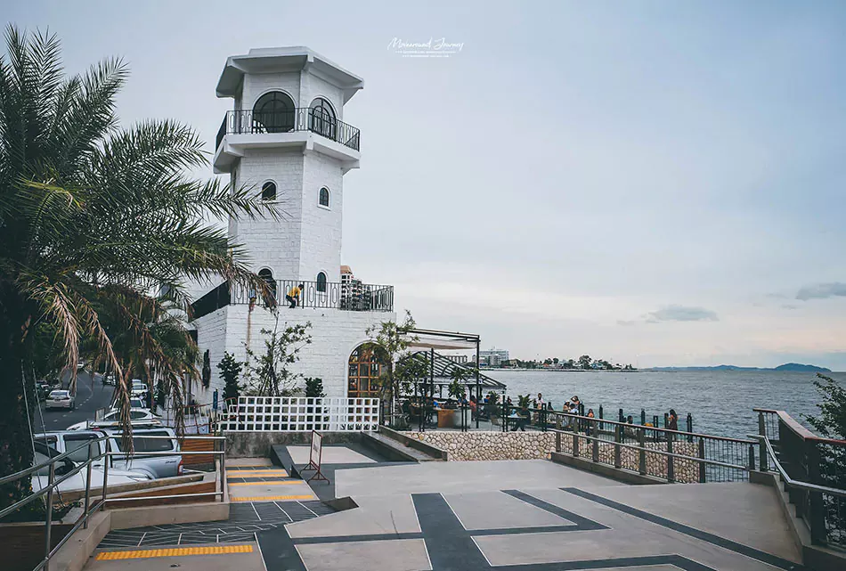
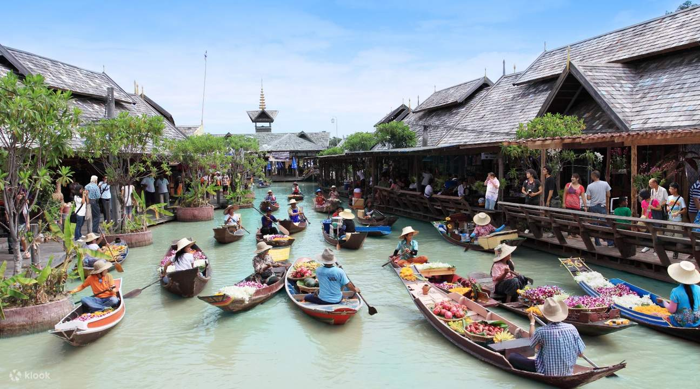
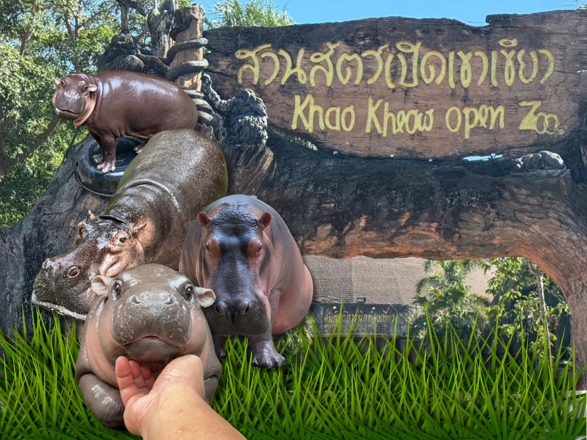

แนะนำสถานที่ท่องเที่ยวของชลบุรี
แนะนำสถานที่ท่องเที่ยวของชลบุรี

- ข้อมูลทั่วไป: เมืองท่องเที่ยวชายทะเลในจังหวัดชลบุรี มีแหล่งบันเทิงหลากหลาย
- กิจกรรมที่น่าสนใจ: เล่นน้ำชายหาด, ชมการแสดงคาบาเร่ต์, นั่งเรือชมวิว, ช้อปปิ้ง
- การเดินทาง: รถยนต์ส่วนตัวหรือรถตู้จากกรุงเทพฯ ใช้เวลา 2-3 ชั่วโมง
- ช่วงเวลาที่เหมาะสม: ตุลาคม-เมษายน
- สิ่งอำนวยความสะดวก: โรงแรมหลายระดับ ร้านอาหารนานาชาติ
- ค่าใช้จ่าย: ที่พักเริ่มต้น 500 บาท/คืน
- เคล็ดลับเพิ่มเติม: หลีกเลี่ยงวันหยุดยาว คนเยอะมาก

- ข้อมูลทั่วไป: เกาะสวยน้ำใส ห่างจากพัทยา 7 กิโลเมตร
- กิจกรรมที่น่าสนใจ: ดำน้ำ, พายเรือคายัค, ขี่มอเตอร์ไซค์รอบเกาะ
- การเดินทาง: นั่งเรือจากท่าเรือแหลมบาลีฮาย ใช้เวลา 30 นาที
- ช่วงเวลาที่เหมาะสม: พฤศจิกายน-เมษายน
- สิ่งอำนวยความสะดวก: มีที่พักหลากหลาย ร้านอาหารทะเล
- ค่าใช้จ่าย: ค่าข้ามเรือ 30-100 บาท
- เคล็ดลับเพิ่มเติม: เช่าเรือสปีดโบ๊ทเพื่อเดินทางเร็วขึ้น

- ข้อมูลทั่วไป: จุดชมวิวธรรมชาติที่งดงาม และมีลิงอาศัยอยู่จำนวนมาก
- กิจกรรมที่น่าสนใจ: ไหว้ศาลเจ้าแม่สามมุก, ชมวิวทะเล
- การเดินทาง: ขับรถจากพัทยา ใช้เวลา 30 นาที
- ช่วงเวลาที่เหมาะสม: ช่วงเช้าหรือเย็น
- สิ่งอำนวยความสะดวก: ร้านขายของกินและที่จอดรถ
- ค่าใช้จ่าย: ฟรี
- เคล็ดลับเพิ่มเติม: ระวังลิงหยิบของ

- ข้อมูลทั่วไป: ตลาดน้ำที่รวบรวมวัฒนธรรมจาก 4 ภาคของไทย
- กิจกรรมที่น่าสนใจ: ล่องเรือ, ช้อปปิ้งของพื้นเมือง, ชิมอาหารท้องถิ่น
- การเดินทาง: ตั้งอยู่บนถนนสุขุมวิท ใกล้พัทยาใต้
- ช่วงเวลาที่เหมาะสม: ช่วงเช้าหรือเย็น
- สิ่งอำนวยความสะดวก: ร้านอาหาร คาเฟ่ จุดขายของที่ระลึก
- ค่าใช้จ่าย: ค่าบัตรเข้าชม 200 บาท
- เคล็ดลับเพิ่มเติม: เตรียมกล้องสำหรับถ่ายภาพ

- ข้อมูลทั่วไป: สวนสัตว์เปิดที่ใหญ่ที่สุดในประเทศไทย ตั้งอยู่ในจังหวัดชลบุรี
- กิจกรรมที่น่าสนใจ: ชมสัตว์หลากหลายชนิด, ป้อนอาหารสัตว์, นั่งรถชมวิวในสวนสัตว์
- การเดินทาง: ขับรถจากพัทยาประมาณ 40 นาที
- ช่วงเวลาที่เหมาะสม: เช้าหรือบ่าย อากาศไม่ร้อน
- สิ่งอำนวยความสะดวก: ร้านอาหาร, ที่จอดรถ, บริการรถพาชม
- ค่าใช้จ่าย: ค่าบัตรเข้าชมผู้ใหญ่ 150 บาท เด็ก 30 บาท
- เคล็ดลับเพิ่มเติม: พกหมวกหรือร่มเพื่อกันแดด